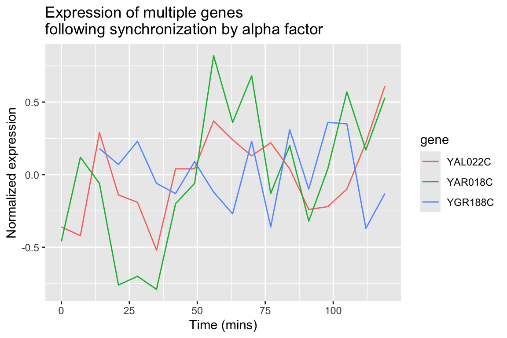

Chapter 8 Data wrangling, Part I
In the real world you’ll often create a data set (or be given one) in a format that is less than ideal for analysis. This can happen for a number of reasons. For example, the data may have been recorded in a manner convenient for collection and visual inspection, but which does not work well for analysis and plotting. Or the data may be an amalgamation of multiple experiments, in which each of the experimenters used slightly different naming conventions. Or the data may have been produced by an instrument that produces output with a fixed format. Sometimes important experimental information is included in the column headers of a spreadsheet.
Whatever the case, we often find ourselves in the situation where we need to “wrangle” our data into a “tidy” format before we can proceed with visualization and analysis. The “R for Data Science” text discusses some desirable rules for “tidy” data in order to facilitate downstream analyses. These are:
- Each variable must have its own column.
- Each observation must have its own row.
- Each value must have its own cell.
In this lecture we’re going to walk through an extended example of wrangling some data into a “tidy” format.
8.2 Data
To illustrate a data wrangling pipeline, we’re going to use a gene expression microarray data set, based on the following paper:
- Spellman PT, et al. 1998. Comprehensive identification of cell cycle-regulated genes of the yeast Saccharomyces cerevisiae by microarray hybridization. Mol Biol Cell 9(12): 3273-97.
In this paper, Spellman and colleagues tried to identify all the genes in the yeast genome (>6000 genes) that exhibited oscillatory behaviors suggestive of cell cycle regulation. To do so, they combined gene expression measurements from six different types of cell cycle synchronization experiments.
Download the Spellman data to your filesystem from this link (right-click the “Download” button and save to your Downloads folder or similar).
I suggest that once you download the data, you open it in a spreadsheet program (e.g. Excel) or use the RStudio Data Viewer to get a sense of what the data looks like.
Let’s load it into R, using the read_tsv() function, using the appropriate file path.
# the filepath may differ on your computer
spellman <- read_tsv("data/spellman-combined.txt")
#> New names:
#> Rows: 6178 Columns: 83
#> ── Column specification
#> ─────────────────────────────── Delimiter: "\t" chr
#> (1): ...1 dbl (77): cln3-1, cln3-2, clb2-2, clb2-1,
#> alpha0, alpha7, alpha14, alpha21, ... lgl (5): clb,
#> alpha, cdc15, cdc28, elu
#> ℹ Use `spec()` to retrieve the full column
#> specification for this data. ℹ Specify the column
#> types or set `show_col_types = FALSE` to quiet this
#> message.
#> • `` -> `...1`The initial dimenions of the data frame are:
The six types of cell cycle synchronization experiments included in this data set are:
- synchronization by alpha-factor = “alpha”
- synchronization by cdc15 temperature sensitive mutants = “cdc15”
- synchronization by cdc28 temperature sensitive mutants = “cdc28”
- synchronization by elutration = “elu”
- synchronization by cln3 mutatant strains = “cln3”
- synchronization by clb2 mutant strains = “clb2”
8.3 Renaming data frame columms
Notice that when we imported the data we got a warning message: Missing column names filled in: 'X1' [1]. In a data frame, every column must have a name. The first column of our data set did not have a name in the header, so read_tsv automatically gave it the name ...1.
Our first task is to give the first column a more meaningful name. This column gives “systematic gene names” – a standardized naming scheme for genes in the yeast genome. We’ll use dplyr::rename to rename X1 to gene. Note that rename can take multiple arguments if you need to rename multiple columns simultaneously.
Note the use of the compound assingment operator – %<>% – from the magrittr package, which we introduced in our last class session.
8.4 Dropping unneeded columns
Take a look at the Spellman data again in your spreadsheet program (or the RStudio data viewer). You’ll notice there are some blank columns. For example there is a column with the header “alpha” that has no entries. These are simply visual organizing elements that the creator of the spreadsheet added to separate the different experiments that are included in the data set.
We can use dplyr::select() to drop columns by prepending column names with the negative sign:
Note that usually select() keeps only the variables you specify. However if the first expression is negative, select will instead automatically keep all variables, dropping only those you specify.
8.4.1 Finding all empty columns
In the example above, we looked at the data and saw that the “alpha” column was empty, and thus dropped it. This worked because there are only a modest number of columns in the data frame in it’s initial form. However, if our data frame contained thousands of columns, this “look and see” procedure would not be efficient. Can we come up with a general solution for removing empty columns from a data frame?
When you load a data frame from a spreadsheet, empty cells are given the value NA. In previous class sessions we were introduced to the function is.na() which tests each value in a vector or data frame for whether it’s NA or not. We can count NA values in a vector by summing the output of is.na(). Conversely we can count the number of “not NA” items by using the negation operator (!):
# count number of NA values in the alpha0 column
sum(is.na(spellman$alpha0))
#> [1] 165
# count number of values that are NOT NA in alpha0
sum(!is.na(spellman$alpha0))
#> [1] 6013This seems like it should get us close to a solution but sum(is.na(..)) when applied to a data frame counts NAs across the entire data frame, not column-by-column.
If we want sums of NAs by column, we instead use the colSums() function:
# get number of NAs by column
colSums(is.na(spellman))
#> ...1 cln3-1 cln3-2 clb clb2-2 clb2-1 alpha alpha0
#> 0 193 365 6178 454 142 6178 165
#> alpha7 alpha14 alpha21 alpha28 alpha35 alpha42 alpha49 alpha56
#> 525 191 312 267 207 123 257 147
#> alpha63 alpha70 alpha77 alpha84 alpha91 alpha98 alpha105 alpha112
#> 186 185 178 155 329 209 174 222
#> alpha119 cdc15 cdc15_10 cdc15_30 cdc15_50 cdc15_70 cdc15_80 cdc15_90
#> 251 6178 677 477 501 608 573 562
#> cdc15_100 cdc15_110 cdc15_120 cdc15_130 cdc15_140 cdc15_150 cdc15_160 cdc15_170
#> 606 570 611 495 574 811 583 571
#> cdc15_180 cdc15_190 cdc15_200 cdc15_210 cdc15_220 cdc15_230 cdc15_240 cdc15_250
#> 803 613 1014 573 741 596 847 379
#> cdc15_270 cdc15_290 cdc28 cdc28_0 cdc28_10 cdc28_20 cdc28_30 cdc28_40
#> 537 426 6178 122 72 67 55 66
#> cdc28_50 cdc28_60 cdc28_70 cdc28_80 cdc28_90 cdc28_100 cdc28_110 cdc28_120
#> 56 82 84 75 237 165 319 312
#> cdc28_130 cdc28_140 cdc28_150 cdc28_160 elu elu0 elu30 elu60
#> 1439 2159 521 543 6178 122 153 175
#> elu90 elu120 elu150 elu180 elu210 elu240 elu270 elu300
#> 132 103 119 111 118 131 110 112
#> elu330 elu360 elu390
#> 112 156 114Columns with all missing values can be more conveniently found by asking for those columns where the number of “not missing” values is zero:
# get names of all columns for which all rows are NA
# useing standard indexing
names(spellman)[colSums(!is.na(spellman)) == 0]
#> [1] "clb" "alpha" "cdc15" "cdc28" "elu"We can combine the colSums(!is.na()) idiom with the dplyr::select_if function to quickly remove all empty columns as so:
8.4.2 Dropping columns by matching names
Only two time points from the cln3 and clb2 experiments were reported in the original publication. Since complete time series are unavailable for these two experimental conditions we will drop them from further consideration.
select() can be called be called with a number of “helper function” (?select_helpers). Here we’ll illustrate the matches() helper function which matches column names to a “regular expression”. Regular expressions (also referred to as “regex” or “regexp”) are a way of specifying patterns in strings. For the purposes of this document we’ll illustrate regexs by example; for a more detailed explanation of regular expressions see the the regex help(?regex) and the Chapter on Strings in “R for Data Analysis”:
Let’s see how to drop all the “cln3” and “clb2” columns from the data frame using matches():
If we wanted we could have collapsed our two match statements into one as follows:
In this second example, the character “|” is specifing an OR match within the regular expression, so this regular expression matches column names that contain “cln3” OR “clb2”.
8.5 Merging data frames
Often you’ll find yourself in the situation where you want to combine information from multiple data sources. The usual requirement is that the data sources have one or more shared columns, that allow you to relate the entities or observations (rows) between the data sets. dplyr provides a variety of join functions to handle different data merging operators.
To illustrating merging or joining data sources, we’ll add information about each genes “common name” and a description of the gene functions to our Spellman data set. I’ve prepared a file with this info based on info I downloaded from the Saccharomyces Genome Database.
gene.info <- read_csv("https://github.com/bio304-class/bio304-course-notes/raw/master/datasets/yeast-ORF-info.csv")
#> Rows: 6610 Columns: 3
#> ── Column specification ───────────────────────────────
#> Delimiter: ","
#> chr (3): ftr.name, std.name, description
#>
#> ℹ Use `spec()` to retrieve the full column specification for this data.
#> ℹ Specify the column types or set `show_col_types = FALSE` to quiet this message.Having loaded the data, let’s get a quick overview of it’s structure:
names(gene.info)
#> [1] "ftr.name" "std.name" "description"
dim(gene.info)
#> [1] 6610 3
head(gene.info)
#> # A tibble: 6 × 3
#> ftr.name std.name description
#> <chr> <chr> <chr>
#> 1 YAL069W <NA> Dubious open reading frame; unlikely to encode a functiona…
#> 2 YAL068W-A <NA> Dubious open reading frame; unlikely to encode a functiona…
#> 3 YAL068C PAU8 Protein of unknown function; member of the seripauperin mu…
#> 4 YAL067W-A <NA> Putative protein of unknown function; identified by gene-t…
#> 5 YAL067C SEO1 Putative permease; member of the allantoate transporter su…
#> 6 YAL066W <NA> Dubious open reading frame; unlikely to encode a functiona…In gene.info, the ftr.name column corresponds to the gene column in our Spellman data set. The std.name column gives the “common” gene name (not every gene has a common name so there are lots of NAs). The description column gives a brief textual description of what the gene product does.
To combine spellmean.clean with gene.info we use the left_join function defined in dplyr. As noted in the description of the function, left_join(x, y) returns “all rows from x, and all columns from x and y. Rows in x with no match in y will have NA values in the new columns.” In addition, we have to specify the column to join by using the by argument to left_join.
By default, the joined columns are merged at the end of the data frame, so we’ll reorder variables to bring the std.name and description to the second and thirds columns, preserving the order of all the other colums.
spellman.merged %<>%
select(gene, std.name, description, everything())
spellman.merged
#> # A tibble: 6,178 × 76
#> gene std.name description alpha0 alpha7 alpha14 alpha21 alpha28 alpha35
#> <chr> <chr> <chr> <dbl> <dbl> <dbl> <dbl> <dbl> <dbl>
#> 1 YAL001C TFC3 Subunit of RN… -0.15 -0.15 -0.21 0.17 -0.42 -0.44
#> 2 YAL002W VPS8 Membrane-bind… -0.11 0.1 0.01 0.06 0.04 -0.26
#> 3 YAL003W EFB1 Translation e… -0.14 -0.71 0.1 -0.32 -0.4 -0.58
#> 4 YAL004W <NA> Dubious open … -0.02 -0.48 -0.11 0.12 -0.03 0.19
#> 5 YAL005C SSA1 ATPase involv… -0.05 -0.53 -0.47 -0.06 0.11 -0.07
#> 6 YAL007C ERP2 Member of the… -0.6 -0.45 -0.13 0.35 -0.01 0.49
#> 7 YAL008W FUN14 Integral mito… -0.28 -0.22 -0.06 0.22 0.25 0.13
#> 8 YAL009W SPO7 Putative regu… -0.03 -0.27 0.17 -0.12 -0.27 0.06
#> 9 YAL010C MDM10 Subunit of bo… -0.05 0.13 0.13 -0.21 -0.45 -0.21
#> 10 YAL011W SWC3 Protein of un… -0.31 -0.43 -0.3 -0.23 -0.13 -0.07
#> # ℹ 6,168 more rows
#> # ℹ 67 more variables: alpha42 <dbl>, alpha49 <dbl>, alpha56 <dbl>,
#> # alpha63 <dbl>, alpha70 <dbl>, alpha77 <dbl>, alpha84 <dbl>, alpha91 <dbl>,
#> # alpha98 <dbl>, alpha105 <dbl>, alpha112 <dbl>, alpha119 <dbl>,
#> # cdc15_10 <dbl>, cdc15_30 <dbl>, cdc15_50 <dbl>, cdc15_70 <dbl>,
#> # cdc15_80 <dbl>, cdc15_90 <dbl>, cdc15_100 <dbl>, cdc15_110 <dbl>,
#> # cdc15_120 <dbl>, cdc15_130 <dbl>, cdc15_140 <dbl>, cdc15_150 <dbl>, …8.6 Reshaping data with tidyr
The tidyr package provides functions for reshaping or tidying data frames. tidyr is yet another component of the tidyverse, and thus was loaded by the library(tidyverse).
We’re going to look at two functions tidyr::gather() and tidyr::extract(), and how they can be combined with now familiar dplyr functions we’ve seen previously. The reading assignment for today’s class session covers a variety of other functions defined in tidyr.
The Spellman data, as I provided it to you, is in what we would call “wide” format. Each column (besides the gene column) corresponds to an experimental condition and time point. For example, “alpha0” is the alpha-factor experiment at time point 0 mins; “alpha7” is the alpha-factor experiment at time point 7 mins, etc. The cells within each column correspond to the expression of a corresponding gene (given by the first column which we renamed gene) in that particular experiment at that particular time point.
In every column (except “gene”), the cells represents the same abstract property of interest – the expression of a gene of interest in a particular experiment/time point. Our first task will be to rearrange our “wide” data frame that consists of many different columns representing gene expression into a “long” data frame with just a single column representing expression. We’ll also create a new column to keep track of which experiment and time point the measurement came from.
8.6.1 Wide to long conversions using tidyr::gather
tidyr::gather() takes multiple columns, and collapses them together into a smaller number of new columns. When using gather() you give the names of the new columns to create, as well as the names of any existing columns gather() should not collect together.
Here we want to collapse all 73 or the expression columns – “alpha0” to “elu390” – into two columns: 1) a column to represent the expt/time point of the measurement, and 2) a column to represent the corresponding expression value. The column we don’t want to touch are the gene, std.name, and description.
# convert "wide" data to "long"
spellman.long <-
spellman.merged %>%
gather(expt.and.time, expression, -gene, -std.name, -description)Take a moment to look at the data in the “long format”:
head(spellman.long)
#> # A tibble: 6 × 5
#> gene std.name description expt.and.time expression
#> <chr> <chr> <chr> <chr> <dbl>
#> 1 YAL001C TFC3 Subunit of RNA polymerase III trans… alpha0 -0.15
#> 2 YAL002W VPS8 Membrane-binding component of the C… alpha0 -0.11
#> 3 YAL003W EFB1 Translation elongation factor 1 bet… alpha0 -0.14
#> 4 YAL004W <NA> Dubious open reading frame; unlikel… alpha0 -0.02
#> 5 YAL005C SSA1 ATPase involved in protein folding … alpha0 -0.05
#> 6 YAL007C ERP2 Member of the p24 family involved i… alpha0 -0.6And compare the dimensions of the wide data to the new data:
As you see, we’ve gone from a data frame with 6178 rows and 76 columns (wide format), to a new data frame with 450994 rows and 5 columns (long format).
8.6.2 Extracting information from combined variables using tidyr::extract
The column expt.and.time violates one of our principles of tidy data: “Each variable must have its own column.”. This column conflates two different types of information – the experiment type and the time point of the measurement. Our next task is to split this information up into two new variables, which will help to facilitate downstream plotting and analysis.
One complicating factor is that the different experiments/time combinations have different naming conventions:
The “alpha” and “elu” experiments are of the form “alpha0”, “alpha7”, “elu0”, “elu30”, etc. In this case, the first part of the string gives the experiment type (either alpha or elu) and the following digits give the time point.
In the “cdc15” and “cdc28” experiments the convention is slightly different; they are of the form “cdc15_0”, “cdc15_10”, “cdc28_0”, “cdc28_10”, etc. Here the part of the string before the underscore gives the experiment type, and the digits after the underscore give the time point.
Because of the differences in naming conventions, we will find it easiest to break up spellman.long into a series of sub-data sets corresponding to each experiment type in order to extract out the experiment and time information. After processing each data subset separately, we will join the modified sub-data frames back together.
8.6.3 Subsetting rows
Let’s start by getting just the rows corresponding to the “alpha” experiment/times. Here we use dplyr::filter in combination with stringr::str_detect to get all those rows in which the expt.and.time variable contains the string “alpha”.
alpha.long <-
spellman.long %>%
filter(str_detect(expt.and.time, "alpha"))
# look at the new data frame
dim(alpha.long)
#> [1] 111204 5
head(alpha.long, n = 10)
#> # A tibble: 10 × 5
#> gene std.name description expt.and.time expression
#> <chr> <chr> <chr> <chr> <dbl>
#> 1 YAL001C TFC3 Subunit of RNA polymerase III tran… alpha0 -0.15
#> 2 YAL002W VPS8 Membrane-binding component of the … alpha0 -0.11
#> 3 YAL003W EFB1 Translation elongation factor 1 be… alpha0 -0.14
#> 4 YAL004W <NA> Dubious open reading frame; unlike… alpha0 -0.02
#> 5 YAL005C SSA1 ATPase involved in protein folding… alpha0 -0.05
#> 6 YAL007C ERP2 Member of the p24 family involved … alpha0 -0.6
#> 7 YAL008W FUN14 Integral mitochondrial outer membr… alpha0 -0.28
#> 8 YAL009W SPO7 Putative regulatory subunit of Nem… alpha0 -0.03
#> 9 YAL010C MDM10 Subunit of both the ERMES and the … alpha0 -0.05
#> 10 YAL011W SWC3 Protein of unknown function; compo… alpha0 -0.318.6.4 Splitting columns
Having subsetted the data, we can now split expt.and.time into two new variables – expt and time. To do this we use tidyr::extract.
alpha.long %<>%
tidyr::extract(expt.and.time, # column we're extracting from
c("expt", "time"), # new columns we're creating
regex="(alpha)([[:digit:]]+)", # regexp (see below)
convert=TRUE) # automatically convert column types
# NOTE: I'm being explict about saying tidyr::extract because the
# magrittr package defines a different extract functionLet’s take a moment to look at the regex argument to extract – regex="(alpha)([[:digit:]]+)". The regex is specified as a character string. Each part we want to match and extract is surround by parentheses. In this case we have two sets of parentheses corresponding to the two matches we want to make. The first part of the regex is (alpha); here we’re looking to make an exact match to the string “alpha”. The second part of the regex reads ([[:digit:]]+). [[:digit:]] indicates we’re looking for a numeric digit. The + after [[:digit:]] indicates that we want to match one or more digits (i.e. to get a match we need to find at least one digit, but more than one digit should also be a match).
Let’s take a look at the new version of alpha.long following application of extract:
head(alpha.long, n = 10)
#> # A tibble: 10 × 6
#> gene std.name description expt time expression
#> <chr> <chr> <chr> <chr> <int> <dbl>
#> 1 YAL001C TFC3 Subunit of RNA polymerase III transc… alpha 0 -0.15
#> 2 YAL002W VPS8 Membrane-binding component of the CO… alpha 0 -0.11
#> 3 YAL003W EFB1 Translation elongation factor 1 beta… alpha 0 -0.14
#> 4 YAL004W <NA> Dubious open reading frame; unlikely… alpha 0 -0.02
#> 5 YAL005C SSA1 ATPase involved in protein folding a… alpha 0 -0.05
#> 6 YAL007C ERP2 Member of the p24 family involved in… alpha 0 -0.6
#> 7 YAL008W FUN14 Integral mitochondrial outer membran… alpha 0 -0.28
#> 8 YAL009W SPO7 Putative regulatory subunit of Nem1p… alpha 0 -0.03
#> 9 YAL010C MDM10 Subunit of both the ERMES and the SA… alpha 0 -0.05
#> 10 YAL011W SWC3 Protein of unknown function; compone… alpha 0 -0.31Notice our two new variables, both of which have appropriate types!
A data frame for the elutriation data can be created similarly:
elu.long <-
spellman.long %>%
filter(str_detect(expt.and.time, "elu")) %>%
tidyr::extract(expt.and.time, # column we're extracting from
c("expt", "time"), # new columns we're creating
regex="(elu)([[:digit:]]+)", # regexp (see below)
convert=TRUE) # automatically convert column types8.6.4.1 A fancier regex for the cdc experiments
Now let’s process the cdc experiments (cdc15 and cdc28). As before we extract the corresponding rows of the data frame using filter and str_detect. We then split expt.and.time using tidyr::extract. In this case we carry out the two steps in a single code block using pipes:
cdc.long <-
spellman.long %>%
# both cdc15 and cdc28 contain "cdc" as a sub-string
filter(str_detect(expt.and.time, "cdc")) %>%
tidyr::extract(expt.and.time,
c("expt", "time"),
regex="(cdc15|cdc28)_([[:digit:]]+)", # note the fancier regex
convert=TRUE)The regex – "(cdc15|cdc28)_([[:digit:]]+)" – is slightly fancier in this example. As before there are two parts we’re extracting: (cdc15|cdc28) and ([[:digit:]]+). The first parenthesized regexp is an “OR” – i.e. match “cdc15” or “cdc28”. The second parenthesized regexp is the same as we saw previously. Separating the two parenthesized regexps is an underscore (_). The underscore isn’t parenthesized because we only want to use it to make a match not to extract the corresponding match.
8.6.5 Combining data frames
If you have two or more data frames with identical columns, the rows of the data frames can be combined into a single data frame using rbind (defined in the base package). For example, to reassemble the alpha.long, elu.long, and cdc.long data frames into a single data frame we do:
8.6.6 Sorting data frame rows
Currently the spellman.final data frame is sorted by time point and experiment.
head(spellman.final, n = 10)
#> # A tibble: 10 × 6
#> gene std.name description expt time expression
#> <chr> <chr> <chr> <chr> <int> <dbl>
#> 1 YAL001C TFC3 Subunit of RNA polymerase III transc… alpha 0 -0.15
#> 2 YAL002W VPS8 Membrane-binding component of the CO… alpha 0 -0.11
#> 3 YAL003W EFB1 Translation elongation factor 1 beta… alpha 0 -0.14
#> 4 YAL004W <NA> Dubious open reading frame; unlikely… alpha 0 -0.02
#> 5 YAL005C SSA1 ATPase involved in protein folding a… alpha 0 -0.05
#> 6 YAL007C ERP2 Member of the p24 family involved in… alpha 0 -0.6
#> 7 YAL008W FUN14 Integral mitochondrial outer membran… alpha 0 -0.28
#> 8 YAL009W SPO7 Putative regulatory subunit of Nem1p… alpha 0 -0.03
#> 9 YAL010C MDM10 Subunit of both the ERMES and the SA… alpha 0 -0.05
#> 10 YAL011W SWC3 Protein of unknown function; compone… alpha 0 -0.31It might be useful instead to sort by gene and experiment. To do this we can use dplyr::arrange:
spellman.final %<>%
arrange(gene, expt)
# look again at the rearranged data
head(spellman.final, n = 10)
#> # A tibble: 10 × 6
#> gene std.name description expt time expression
#> <chr> <chr> <chr> <chr> <int> <dbl>
#> 1 YAL001C TFC3 Subunit of RNA polymerase III transc… alpha 0 -0.15
#> 2 YAL001C TFC3 Subunit of RNA polymerase III transc… alpha 7 -0.15
#> 3 YAL001C TFC3 Subunit of RNA polymerase III transc… alpha 14 -0.21
#> 4 YAL001C TFC3 Subunit of RNA polymerase III transc… alpha 21 0.17
#> 5 YAL001C TFC3 Subunit of RNA polymerase III transc… alpha 28 -0.42
#> 6 YAL001C TFC3 Subunit of RNA polymerase III transc… alpha 35 -0.44
#> 7 YAL001C TFC3 Subunit of RNA polymerase III transc… alpha 42 -0.15
#> 8 YAL001C TFC3 Subunit of RNA polymerase III transc… alpha 49 0.24
#> 9 YAL001C TFC3 Subunit of RNA polymerase III transc… alpha 56 -0.1
#> 10 YAL001C TFC3 Subunit of RNA polymerase III transc… alpha 63 NA8.7 Using your tidy data
Whew – that was a fair amount of work to tidy our data! But having done so we can now carry out a wide variety of very powerful analyses.
8.7.1 Visualizing gene expression time series
Let’s start by walking through a series of visualizations of gene expression time series. Each plot will show the expression of one or more genes, at different time points, in one or more experimental conditions. Our initial visualizations exploit the “long” versions of the tidy data.
First a single gene in a single experimental condition:
spellman.final %>%
filter(expt == "alpha", gene == "YAL022C") %>%
ggplot(aes(x = time, y = expression)) +
geom_line() +
labs(x = "Time (mins)", y = "Expression of YAL022C")
We can easily modify the above code block to visualize the expression of multiple genes of interest:
genes.of.interest <- c("YAL022C", "YAR018C", "YGR188C")
spellman.final %>%
filter(gene %in% genes.of.interest, expt == "alpha") %>%
ggplot(aes(x = time, y = expression, color = gene)) +
geom_line() +
labs(x = "Time (mins)", y = "Normalized expression",
title = "Expression of multiple genes\nfollowing synchronization by alpha factor")
By employing facet_wrap() we can visualize the relationship between this set of genes in each of the experiment types:
spellman.final %>%
filter(gene %in% genes.of.interest) %>%
ggplot(aes(x = time, y = expression, color = gene)) +
geom_line() +
facet_wrap(~ expt) +
labs(x = "Time (mins)", y = "Normalized expression",
title = "Expression of Multiple Genes\nAcross experiments") 
The different experimental treatments were carried out for varying lengths of time due to the differences in their physiological effects. Plotting them all on the same time scale can obscure that patterns of oscillation we might be interested in, so let’s modify our code block so that plots that share the same y-axis, but have differently scaled x-axes.
8.7.2 Finding the most variable genes
When dealing with vary large data sets, one ad hoc filtering criteria that is often employed is to focus on those variables that exhibit that greatest variation (variation is measure of the spread of data; we will give a precise definition in a later lecture). To do this, we first need to order our variables (genes) by their variation. Let’s see how we can accomplish this using our long data frame:
by.variance <-
spellman.final %>%
group_by(gene) %>%
summarize(expression.var = var(expression, na.rm = TRUE)) %>%
arrange(desc(expression.var))
head(by.variance)
#> # A tibble: 6 × 2
#> gene expression.var
#> <chr> <dbl>
#> 1 YLR286C 2.157
#> 2 YNR067C 1.733
#> 3 YNL327W 1.653
#> 4 YGL028C 1.571
#> 5 YHL028W 1.521
#> 6 YKL164C 1.515The code above calculates the variance of each gene but ignores the fact that we have different experimental conditions. To take into account the experimental design of the data at hand, let’s calculate the average variance across the experimental conditions:
by.avg.variance <-
spellman.final %>%
group_by(gene, expt) %>%
summarize(expression.var = var(expression, na.rm = TRUE)) %>%
group_by(gene) %>%
summarize(avg.expression.var = mean(expression.var)) %>%
arrange(desc(avg.expression.var))
#> `summarise()` has grouped output by 'gene'. You can
#> override using the `.groups` argument.
head(by.avg.variance)
#> # A tibble: 6 × 2
#> gene avg.expression.var
#> <chr> <dbl>
#> 1 YFR014C 3.579
#> 2 YFR053C 2.377
#> 3 YBL032W 2.299
#> 4 YDR274C 2.173
#> 5 YLR286C 2.128
#> 6 YMR206W 1.937Based on the average experession variance across experimental conditions, let’s get the names of the 1000 most variable genes: